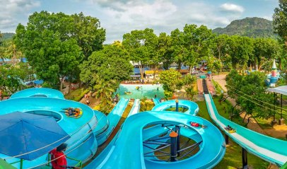
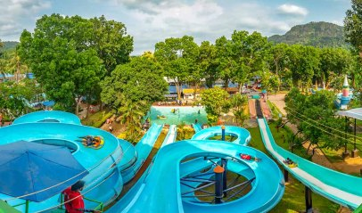
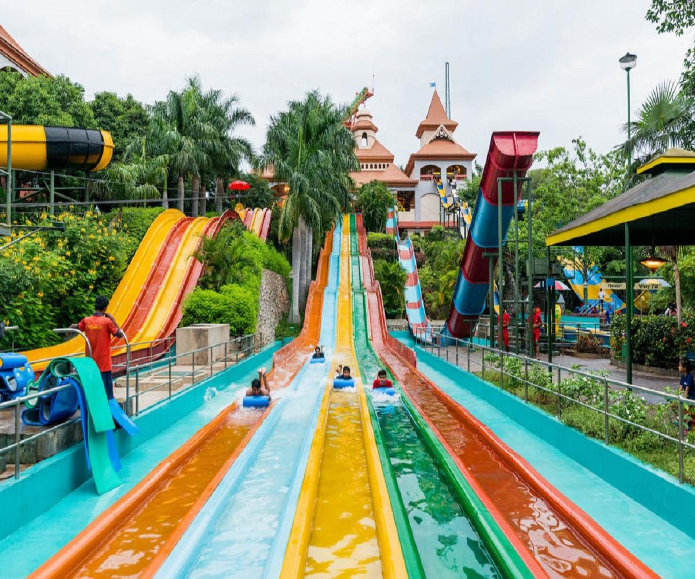
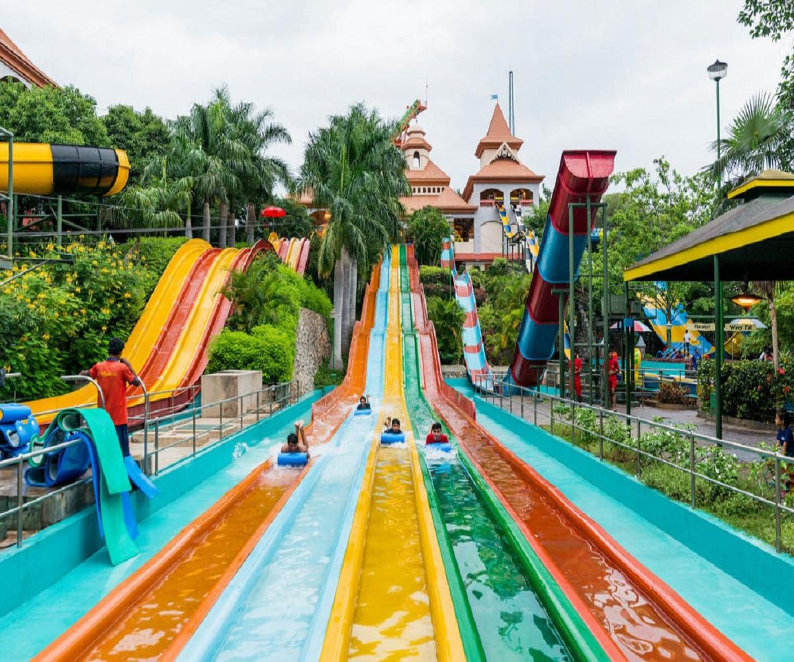

| home | about | heritage | hotels | gallery |
 

 

Vismaya is an amusement water theme park near Taliparamba in Kannur, Kerala. The park is developed and run by Malabar Tourism Development Co-operative Limited (MTDC). It is situated near to the famous Muthappan temple in Parassinikadavu. It was officially inaugurated in August 2008 and since then it has become one of the favorite holiday destination in Malabar. The park is completely operated by the rain water collected by the reservoir spread over two acres (0.81 ha) of land with a capacity of 50,000,000 L (11,000,000 imp gal; 13,000,000 US gal) of water.
Malabar Tourism Development Cooperative Limited (MTDC) was registered on 15 February 2000. And one month later on 9 March 2000 kick-started its operations with E.P. Jayarajan as the chairman. The job sector of Malabar, mainly Kannur focused on textile industry especially handloom, khadi and other industries such as beedi, pottery etc. an integral part of conventional occupation of the region. But all these occupations faced many challenges which gradually lead to an economic decline. In such scenario, to meet the growing market and to create more job opportunities in addition to catering to the growing tourism industry, MTDC came into existence.
The main objects of MTDC are to promote, establish, maintain and manage the business related to tourism and hospitality industry by setting up establishment such as:
Vismaya park is one of the first projects started by MTDC
Vismaya is a blend of amusement, water theme and infotainment park. It has got water rides, informative and entertaining activities for kids and adventurous rides for adults.
Virtual waterfall and Laser show are the two main attractions of this amusement park. Virtual waterfall is a musical waterfall where the visitors dance under the water stream to the background music. This crowd puller is open everyday starting 2 pm and usually ends by 3 pm. Laser shows are usually staged in the evening, and are a major attraction.